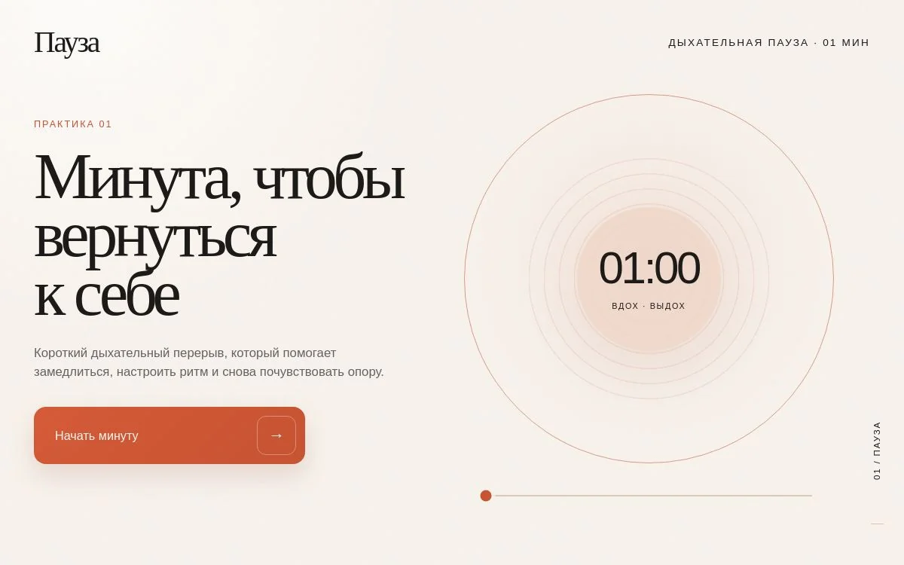

Минутный таймер
Пауза
Небольшой веб-сервис для минутного перерыва. Круговой таймер и одна кнопка запуска занимают весь первый экран.

Минутный таймер
Небольшой веб-сервис для минутного перерыва. Круговой таймер и одна кнопка запуска занимают весь первый экран.
